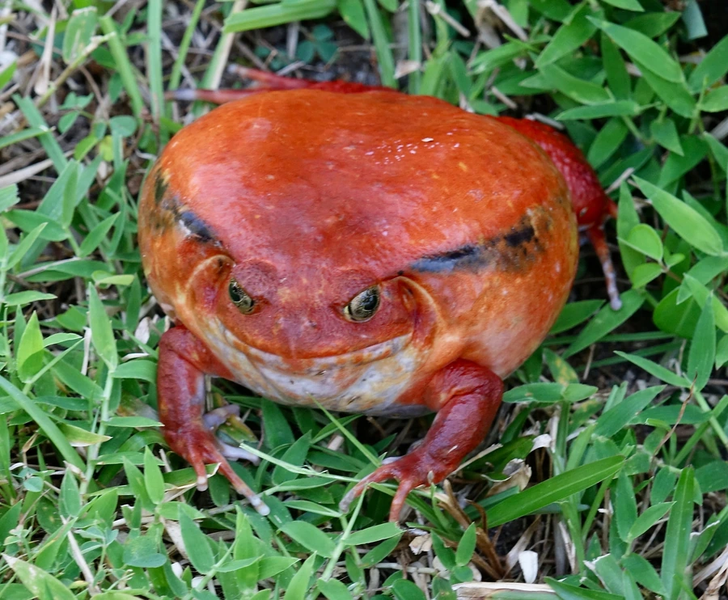

两栖动物 · 动物界
番茄蛙 Dyscophus antongilii

马达加斯加东北部特有的蛙类，体形圆胖、皮肤橙红如熟透的番茄，受威胁时膨胀身体并分泌刺激性黏液，雄蛙鸣声如鸡叫。
- 分类
- 门脊索动物门纲两栖纲目无尾目科姬蛙科属番茄蛙属
- 栖息环境
- 低地雨林、沼泽、农田水沟与雨后积水的池塘边缘
- 地理分布
- 马达加斯加东北部沿海低地，以马鲁安采特拉一带为代表
- 保护级别
- IUCN 近危（NT）；CITES 附录Ⅰ
物种志
番茄蛙体形圆胖，雌蛙体长 8.5–10.5 厘米，雄蛙仅 6–6.5 厘米，体重可达 200 克以上，是姬蛙科中体型较大的种类。皮肤光滑而湿润，背面呈鲜橙红至砖红色，雄蛙颜色偏黄橙，腹部浅黄，喉部有时带黑色斑纹；眼大而突出，四肢短，趾端略膨大但不具吸盘。
它们仅分布于马达加斯加东北部的低地雨林、沼泽与农田水沟，多在雨后积水、池塘与缓流溪边的落叶层中活动，白天隐蔽，夜间捕食昆虫、蠕虫、蜘蛛和小型蛙类。繁殖期雄蛙浮在水面发出低沉短促的鸣声，类似母鸡的咯咯声，雌蛙每次产卵数百至上千枚，蝌蚪约两个月完成变态。受惊时它会迅速鼓胀身体、抬高臀部，并分泌白色刺激性黏液，使捕食者口腔不适而放弃。因栖息地破坏与宠物贸易，其种群受到关注。
形态与习性
- 体长雌蛙约 8.5–10.5 cm，雄蛙约 6–6.5 cm
- 体重雌蛙可达 200 g 以上
- 食性昆虫、蠕虫、蜘蛛与小型蛙类
- 繁殖每次产卵数百至上千枚，蝌蚪约两个月变态
- 防御鼓胀身体并分泌白色刺激性黏液
- 鸣声雄蛙发出类似母鸡咯咯的低沉短鸣
- 寿命约 6–10 年
趣味知识
- 番茄蛙的皮肤是熟透番茄般的橙红色，圆滚滚的身体像一颗会跳的果子。
- 受惊时它会把自己鼓成一个球，并分泌让捕食者口腔发麻的黏液。
- 雄蛙的叫声短促低沉，听起来像母鸡在咯咯叫。